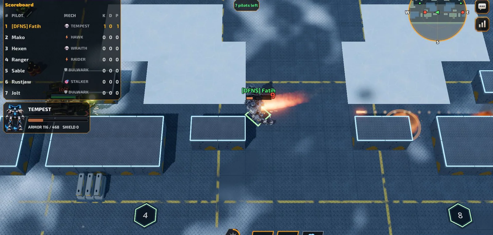
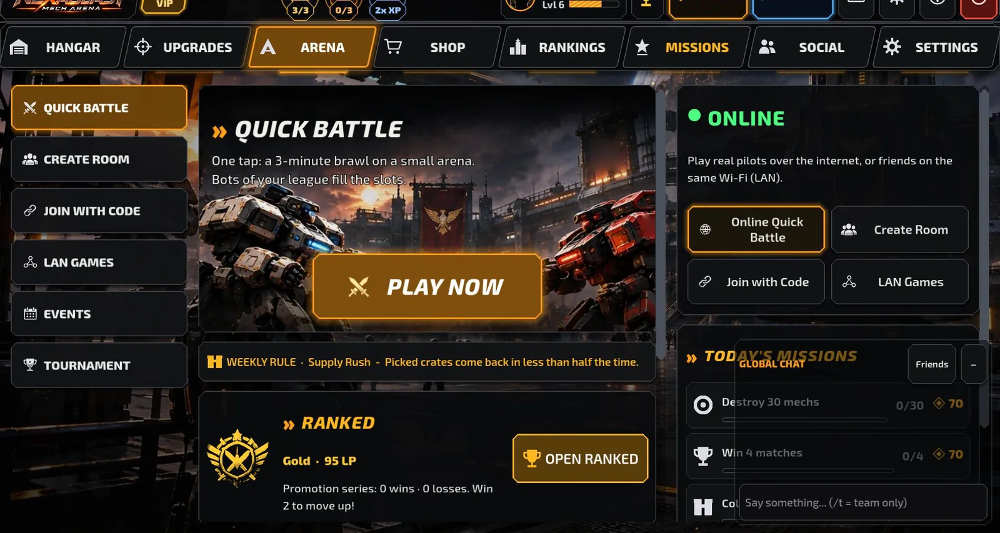

NEXABLAST: Mech Arena Nedir? Oyun Hakkında Her Şey
NEXABLAST: Mech Arena nedir? Ücretsiz robot arena nişancı oyununun modları, mech'leri, hikâyesi ve platformları hakkında bilmen gereken her şey.
NEXABLAST hakkında merak ettiğin her şey: mech'ler, modlar, arenalar, sistem gereksinimleri ve yeni başlayanlar için ipuçları.

NEXABLAST: Mech Arena nedir? Ücretsiz robot arena nişancı oyununun modları, mech'leri, hikâyesi ve platformları hakkında bilmen gereken her şey.

NEXABLAST'taki 8 mech karakteri: AKINCI, AVCI, KALKAN, ŞAHİN, GÖLGE, FIRTINA, TOPÇU ve DEV'in silahları, özel yetenekleri ve değerleri.

NEXABLAST'ta hangi mech sana uygun? Hız, tank, hasar ve keskin nişancı sınıflarını oyun tarzına ve moda göre karşılaştırdık.

NEXABLAST oyun modları: Hızlı Savaş, Herkes Tek, Takım Savaşı, Düello, Dereceli, hikâye ve Arena modu. Tüm kurallar ve kazanma koşulları.

NEXABLAST haritaları: Terra, Mars, Europa, Titan ve Halo-9'daki 10 arena, çevre tehlikeleri ve her haritada işe yarayan ipuçları.

NEXABLAST sistem gereksinimleri: Android, Windows PC ve tarayıcı için minimum ve önerilen özellikler, grafik ayarları ve dosya boyutu.

Yeni başlayanlar için NEXABLAST rehberi: kontroller, ilk mech seçimi, kredi ve Nex, geliştirmeler, günlük görevler ve hızlı ilerleme ipuçları.

NEXABLAST taktikleri: kalkan yönetimi, siper kullanımı, varil tuzakları, mech'e özel kombolar ve takım stratejileriyle daha çok maç kazan.

NEXABLAST güncelleme ve yama notları: 20-28 Kasım 2026 arasında gelen yeni modlar, mech dengesi, görsel yenilikler ve düzeltmeler.

NEXABLAST etkinlikleri ve turnuvaları: Arena modu, turnuva, haftanın kuralı, sezon kartı, çift XP günleri ve klan savaşları hakkında her şey.